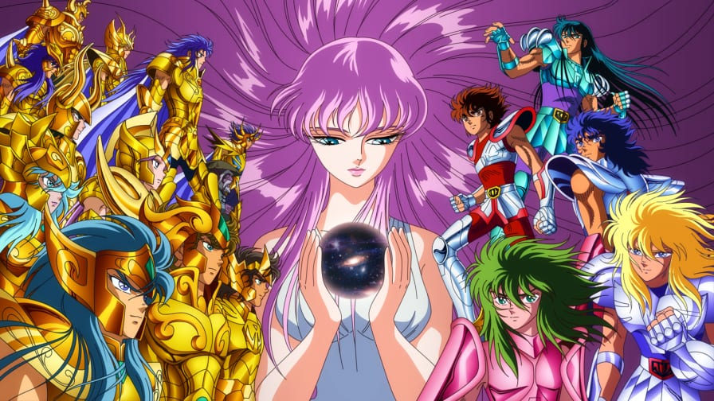

Saint Seiya (nome original da série) conta a história de um grupo de cinco jovens guerreiros cuja função era proteger Saori Kido, reencarnação de Atena, a deusa grega da sabedoria. Para lutar, eles utilizam a energia interior e uma essência espiritual chamada de Cosmo (que se originou com o Big Bang), e suas armaduras que são inspiradas em constelações e na mitologia grega. A animação é dividida em quatro sagas: Saga do Santuário; Saga de Asgard; Saga de Poseidon; Saga de Hades.
Vamos descobrir qual Cavaleiro do Zodíaco te representa!
Digte seu mês e dia de nascimento (nessa ordem):
